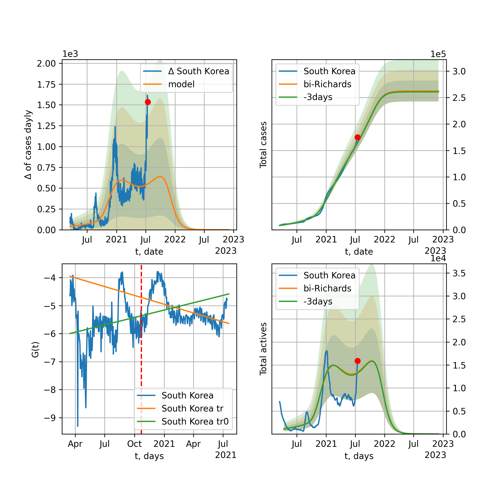

Multi-logistic model of COVID-19 dynamics
Model, code, results
Project maintained by algmaknick Hosted on GitHub Pages — Theme by mattgraham
World

World data at: 2020-06-12
+3 day model MAPE: 0.007829
model: bi-Richards
coeffs: [ 8.15758765e+06 2.05988014e+00 -2.84646186e+01 1.73071264e-02]
S.Korea scenario coeffs: [0.36242246, 2.56241634, 1.84890887, 0.13324732]
rational stdev: 0.086006
forecast at the end of period: +554 days
deltaDaycases: 3180
total cases: 15943695 ± 1371258
total death: 882295 ± 227648
bi-Richards approximation splitting point: 50
trend coefficient of determination: 0.842358
intercept: -2.321123
slope: -0.033555
trend coefficient of determination: 0.414160
intercept: -3.681221
slope: -0.007656
European Union

European Union data at: 2020-06-12
+3 day model MAPE: 0.004146
model: bi-Richards
coeffs: [ 1.70695546e+05 9.47209868e+00 -2.37809984e+01 5.59043075e-03]
rational stdev: 0.610438
forecast at the end of period: +36 days
deltaDaycases: 414
total cases: 1245377 ± 760224
total death: 132927 ± 243430
bi-Richards approximation splitting point: 83
trend coefficient of determination: 0.942748
intercept: -1.077535
slope: -0.057165
trend coefficient of determination: 0.004536
intercept: -5.520274
slope: -0.003109
Brazil

Brazil data at: 2020-06-12
+3 day model MAPE: 0.008933
model: logisticQ
coeffs: [ 1.51705385e+06 5.34050138e-06 9.14418665e+01 -1.31336994e+04]
S.Korea scenario coeffs: [0.35416971, 0.02606324, 4.35859408, 19.30413219]
rational stdev: 0.380743
forecast at the end of period: +414 days
deltaDaycases: 386
total cases: 2043369 ± 777998
total death: 103167 ± 117840
trend coefficient of determination: 0.908740
intercept_: -4.656866487901905
coeffs_: [ 0. -0.23809765 0.00121279]

Brazil data at: 2020-06-12
+3 day model MAPE: 0.004950
model: Richards
coeffs: [2.42386676e+06 8.56997289e-02 8.14961855e+01 4.95344823e-01]
S.Korea scenario coeffs: [0.36242246, 2.56241634, 1.84890887, 0.13324732]
rational stdev: 0.344679
forecast at the end of period: +484 days
deltaDaycases: 405
total cases: 3274023 ± 1128486
total death: 165302 ± 170928
trend coefficient of determination: 0.712312
intercept: -4.838118
slope: -0.059553
Russia

Russia data at: 2020-06-12
+3 day model MAPE: 0.010749
model: Richards
coeffs: [ 6.88803430e+05 2.26400308e+00 -5.01090321e+01 1.80783019e-02]
S.Korea scenario coeffs: [0.36242246, 2.56241634, 1.84890887, 0.13324732]
rational stdev: 0.384833
forecast at the end of period: +344 days
deltaDaycases: 816
total cases: 869871 ± 334754
total death: 11421 ± 13185
trend coefficient of determination: 0.963333
intercept: -1.536948
slope: -0.034519
USA

USA data at: 2020-06-12
+3 day model MAPE: 0.012011
model: Richards
coeffs: [ 2.39198878e+06 4.07079801e+00 -8.78217986e+01 9.07410742e-03]
S.Korea scenario coeffs: [0.36242246, 2.56241634, 1.84890887, 0.13324732]
rational stdev: 0.330643
forecast at the end of period: +456 days
deltaDaycases: 1086
total cases: 3168295 ± 1047574
total death: 174846 ± 173434
trend coefficient of determination: 0.936955
intercept: -1.384755
slope: -0.039994
Spain

Spain data at: 2020-06-12
+3 day model MAPE: 0.000439
model: Richards
coeffs: [ 2.93421202e+05 8.47500566e+00 -5.21927407e+01 7.18066974e-03]
S.Korea scenario coeffs: [0.36242246, 2.56241634, 1.84890887, 0.13324732]
rational stdev: 0.238544
forecast at the end of period: +274 days
deltaDaycases: 127
total cases: 393511 ± 93869
total death: 36785 ± 26324
trend coefficient of determination: 0.963749
intercept: -0.695816
slope: -0.061435
Italy

Italy data at: 2020-06-12
+3 day model MAPE: 0.000758
model: Richards
coeffs: [ 2.37647888e+05 6.93905907e+00 -5.46333773e+01 8.50890737e-03]
S.Korea scenario coeffs: [0.36242246, 2.56241634, 1.84890887, 0.13324732]
rational stdev: 0.075478
forecast at the end of period: +246 days
deltaDaycases: 163
total cases: 315321 ± 23799
total death: 45666 ± 10340
trend coefficient of determination: 0.985617
intercept: -1.094708
slope: -0.056412
United Kingdom

United Kingdom data at: 2020-06-12
+3 day model MAPE: 0.000724
model: Richards
coeffs: [ 3.17323968e+05 4.15106026e+00 -6.35698927e+01 1.11673791e-02]
S.Korea scenario coeffs: [0.36242246, 2.56241634, 1.84890887, 0.13324732]
rational stdev: 0.137822
forecast at the end of period: +344 days
deltaDaycases: 186
total cases: 419941 ± 57877
total death: 59462 ± 24585
trend coefficient of determination: 0.972393
intercept: -1.380489
slope: -0.045463
France

France data at: 2020-06-12
+3 day model MAPE: 0.000965
model: bi-Richards
coeffs: [2.00177213e+04 3.30113006e+00 3.26998708e+01 2.25355560e-02]
rational stdev: 0.190772
forecast at the end of period: +36 days
deltaDaycases: 41
total cases: 162320 ± 30966
total death: 30508 ± 17460
bi-Richards approximation splitting point: 82
trend coefficient of determination: 0.896823
intercept: -0.938372
slope: -0.069219
trend coefficient of determination: 0.068789
intercept: -8.958677
slope: 0.029495
Germany

Germany data at: 2020-06-12
+3 day model MAPE: 0.003071
model: Richards
coeffs: [ 1.82772363e+05 1.03788848e+01 -4.93523130e+01 7.33055775e-03]
S.Korea scenario coeffs: [0.36242246, 2.56241634, 1.84890887, 0.13324732]
rational stdev: 0.083765
forecast at the end of period: +176 days
deltaDaycases: 154
total cases: 242831 ± 20340
total death: 11493 ± 2888
trend coefficient of determination: 0.947546
intercept: -1.467582
slope: -0.060054
Turkey

Turkey data at: 2020-06-12
+3 day model MAPE: 0.006707
model: bi-Richards
coeffs: [2.47167088e+04 9.39785365e+00 1.32427446e+01 8.10122954e-03]
rational stdev: 0.212714
forecast at the end of period: +50 days
deltaDaycases: 24
total cases: 185631 ± 39486
total death: 5061 ± 3229
bi-Richards approximation splitting point: 75
trend coefficient of determination: 0.775555
intercept: -0.959733
slope: -0.057793
trend coefficient of determination: 0.082173
intercept: -4.740161
slope: -0.006080
Iran

Iran data at: 2020-06-12
+3 day model MAPE: 0.001243
model: bi-Richards
coeffs: [1.42335449e+05 3.36546397e+00 7.29404164e+00 1.44309573e-02]
S.Korea scenario coeffs: [0.36242246, 2.56241634, 1.84890887, 0.13324732]
rational stdev: 0.281129
forecast at the end of period: +428 days
deltaDaycases: 72
total cases: 291828 ± 82041
total death: 13844 ± 11675
bi-Richards approximation splitting point: 75
trend coefficient of determination: 0.949243
intercept: -0.932738
slope: -0.055419
trend coefficient of determination: 0.018294
intercept: -4.158082
slope: -0.001944
Canada

Canada data at: 2020-06-12
+3 day model MAPE: 0.000195
model: Richards
coeffs: [ 1.10374792e+05 3.58210796e+00 -7.45314611e+01 1.17289568e-02]
S.Korea scenario coeffs: [0.36242246, 2.56241634, 1.84890887, 0.13324732]
rational stdev: 0.170222
forecast at the end of period: +420 days
deltaDaycases: 35
total cases: 147819 ± 25162
total death: 12147 ± 6203
trend coefficient of determination: 0.975239
intercept: -1.565988
slope: -0.044214
Belgium

Belgium data at: 2020-06-12
+3 day model MAPE: 0.002022
model: Richards
coeffs: [ 5.97545974e+04 5.37903704e+00 -4.22262469e+01 1.23616501e-02]
S.Korea scenario coeffs: [0.36242246, 2.56241634, 1.84890887, 0.13324732]
rational stdev: 0.630216
forecast at the end of period: +176 days
deltaDaycases: 95
total cases: 76690 ± 48331
total death: 12366 ± 23379
trend coefficient of determination: 0.956917
intercept: -1.263630
slope: -0.056902
Peru

Peru data at: 2020-06-12
+3 day model MAPE: 0.010736
model: Richards
coeffs: [ 5.83717396e+05 7.42276873e-01 -4.47854422e+01 3.41850281e-02]
S.Korea scenario coeffs: [0.36242246, 2.56241634, 1.84890887, 0.13324732]
rational stdev: 0.268026
forecast at the end of period: +764 days
deltaDaycases: 113
total cases: 781734 ± 209525
total death: 22338 ± 17961
trend coefficient of determination: 0.751919
intercept: -1.608453
slope: -0.027773
Netherlands

Netherlands data at: 2020-06-12
+3 day model MAPE: 0.004741
model: bi-Richards
coeffs: [4.41732773e+03 1.02123399e+01 3.36569736e+01 8.28153294e-03]
rational stdev: 0.138041
forecast at the end of period: +36 days
deltaDaycases: 13
total cases: 50600 ± 6984
total death: 6320 ± 2617
bi-Richards approximation splitting point: 75
trend coefficient of determination: 0.960061
intercept: -0.809363
slope: -0.061840
trend coefficient of determination: 0.006437
intercept: -5.488408
slope: -0.002505
India

India data at: 2020-06-12
+3 day model MAPE: 0.000306
model: Richards
coeffs: [ 3.75096119e+06 2.99264951e-01 -2.64790762e+01 5.32543206e-02]
S.Korea scenario coeffs: [0.36242246, 2.56241634, 1.84890887, 0.13324732]
rational stdev: 0.371793
forecast at the end of period: +1044 days
deltaDaycases: 1299
total cases: 4843877 ± 1800917
total death: 139088 ± 155135
trend coefficient of determination: 0.674670
intercept: -1.890968
slope: -0.021770
Switzerland

Switzerland data at: 2020-06-12
+3 day model MAPE: 0.001534
model: logisticQ
coeffs: [ 3.03681715e+04 5.90481098e-07 2.62147622e+01 -2.37578761e+05]
rational stdev: 0.320649
forecast at the end of period: +64 days
deltaDaycases: 0
total cases: 30368 ± 9737
total death: 1894 ± 1821
trend coefficient of determination: 0.981342
intercept_: -4.1424142284918695
coeffs_: [ 0. -0.28725884 0.00150893]
Ecuador

Ecuador data at: 2020-06-12
+3 day model MAPE: 0.003821
model: Richards
coeffs: [ 5.59945489e+04 1.66498210e+00 -5.89174577e+01 2.08284895e-02]
S.Korea scenario coeffs: [0.36242246, 2.56241634, 1.84890887, 0.13324732]
rational stdev: 0.337798
forecast at the end of period: +624 days
deltaDaycases: 4
total cases: 75892 ± 25636
total death: 6346 ± 6430
trend coefficient of determination: 0.215366
intercept: -2.112056
slope: -0.037619
Portugal

Portugal data at: 2020-06-12
+3 day model MAPE: 0.003292
model: bi-Richards
coeffs: [ 2.61843008e+04 2.28840850e+00 -3.40086877e+01 1.40073251e-02]
rational stdev: 1.275461
forecast at the end of period: +204 days
deltaDaycases: 1
total cases: 54308 ± 69267
total death: 2259 ± 8643
bi-Richards approximation splitting point: 61
trend coefficient of determination: 0.882821
intercept: -0.746209
slope: -0.064822
trend coefficient of determination: 0.003075
intercept: -5.091163
slope: 0.001735
Saudi Arabia

Saudi Arabia data at: 2020-06-12
+3 day model MAPE: 0.036700
model: Richards
coeffs: [ 2.28998180e+05 1.12424768e+00 -4.70173317e+01 2.56022253e-02]
S.Korea scenario coeffs: [0.36242246, 2.56241634, 1.84890887, 0.13324732]
rational stdev: 0.335291
forecast at the end of period: +442 days
deltaDaycases: 276
total cases: 272374 ± 91324
total death: 2027 ± 2038
trend coefficient of determination: 0.212585
intercept: -2.094491
slope: -0.018374
Sweden

Sweden data at: 2020-06-12
+3 day model MAPE: 0.056627
model: bi-Richards
coeffs: [1.69743910e+04 1.52662649e-01 9.72855315e+01 9.29080524e-01]
rational stdev: 0.244296
forecast at the end of period: +99 days
deltaDaycases: 8
total cases: 64058 ± 15649
total death: 6258 ± 4586
bi-Richards approximation splitting point: 80
trend coefficient of determination: 0.860968
intercept: -5.427572
slope: -0.120998
trend coefficient of determination: 0.024611
intercept: -13.082465
slope: -0.009526
Pakistan

Pakistan data at: 2020-06-12
+3 day model MAPE: 0.040250
model: Richards
coeffs: [1.42784719e+07 1.16587988e-01 4.26721401e+01 9.28700089e-02]
S.Korea scenario coeffs: [0.36242246, 2.56241634, 1.84890887, 0.13324732]
rational stdev: 0.377567
forecast at the end of period: +1534 days
deltaDaycases: 3822
total cases: 18272770 ± 6899201
total death: 352054 ± 398772
trend coefficient of determination: 0.480186
intercept: -2.455964
slope: -0.019896
Ireland

Ireland data at: 2020-06-12
+3 day model MAPE: 0.002159
model: logisticQ
coeffs: [ 2.48392939e+04 1.03513859e-06 3.59655342e+01 -1.15525132e+05]
S.Korea scenario coeffs: [0.35416971, 0.02606324, 4.35859408, 19.30413219]
rational stdev: 0.299785
forecast at the end of period: +106 days
deltaDaycases: 36
total cases: 32994 ± 9891
total death: 2227 ± 2002
trend coefficient of determination: 0.978236
intercept_: -4.247535549515705
coeffs_: [ 0. -0.23245831 0.00101743]
Mexico

Mexico data at: 2020-06-12
+3 day model MAPE: 0.007214
model: Richards
coeffs: [ 7.20172588e+05 4.99089366e-01 -6.32806739e+01 3.85675087e-02]
S.Korea scenario coeffs: [0.36242246, 2.56241634, 1.84890887, 0.13324732]
rational stdev: 0.182557
forecast at the end of period: +904 days
deltaDaycases: 211
total cases: 946638 ± 172815
total death: 111858 ± 61261
trend coefficient of determination: 0.891773
intercept: -2.048079
slope: -0.023631
Singapore

Singapore data at: 2020-06-12
+3 day model MAPE: 0.017061
model: bi-Richards
coeffs: [ 3.42232655e+04 6.79392991e+00 -1.70886365e+01 6.70753458e-03]
S.Korea scenario coeffs: [0.36242246, 2.56241634, 1.84890887, 0.13324732]
rational stdev: 0.259827
forecast at the end of period: +344 days
deltaDaycases: 52
total cases: 51765 ± 13450
total death: 32 ± 24
bi-Richards approximation splitting point: 60
trend coefficient of determination: 0.124547
intercept: -2.316202
slope: -0.021539
trend coefficient of determination: 0.527700
intercept: 0.372609
slope: -0.038289
Chile

Chile data at: 2020-06-12
+3 day model MAPE: 0.036907
model: bi-Richards
coeffs: [2.24762734e+05 7.13265916e-02 7.94095745e+01 1.43192210e+00]
S.Korea scenario coeffs: [0.36242246, 2.56241634, 1.84890887, 0.13324732]
rational stdev: 0.263688
forecast at the end of period: +204 days
deltaDaycases: 108
total cases: 305867 ± 80653
total death: 5457 ± 4316
bi-Richards approximation splitting point: 12
trend coefficient of determination: 0.249784
intercept: -8.297070
slope: -0.390559
trend coefficient of determination: 0.959640
intercept: -12.523201
slope: -0.090575
Israel

Israel data at: 2020-06-12
+3 day model MAPE: 0.021599
model: bi-Richards
coeffs: [3.46926428e+03 1.20193791e+01 4.65374346e+01 1.11850939e-02]
rational stdev: 0.138351
forecast at the end of period: +22 days
deltaDaycases: 17
total cases: 20398 ± 2822
total death: 324 ± 134
bi-Richards approximation splitting point: 70
trend coefficient of determination: 0.928028
intercept: -0.994242
slope: -0.092475
trend coefficient of determination: 0.589430
intercept: -15.589040
slope: 0.124558
Austria

Austria data at: 2020-06-12
+3 day model MAPE: 0.001915
model: bi-Richards
coeffs: [ 2.01255479e+03 8.91314598e+00 -2.14055464e+01 7.17170300e-03]
rational stdev: 0.395172
forecast at the end of period: +8 days
deltaDaycases: 9
total cases: 17095 ± 6755
total death: 676 ± 801
bi-Richards approximation splitting point: 65
trend coefficient of determination: 0.933104
intercept: -1.070649
slope: -0.092218
trend coefficient of determination: 0.152211
intercept: -3.613071
slope: -0.035372
Belarus

Belarus data at: 2020-06-12
+3 day model MAPE: 0.006968
model: Richards
coeffs: [ 7.31300075e+04 2.24420664e+00 -7.31644327e+01 1.66562479e-02]
S.Korea scenario coeffs: [0.36242246, 2.56241634, 1.84890887, 0.13324732]
rational stdev: 0.176840
forecast at the end of period: +414 days
deltaDaycases: 50
total cases: 95326 ± 16857
total death: 540 ± 286
trend coefficient of determination: 0.930749
intercept: -1.734942
slope: -0.039142
Japan

Japan data at: 2020-06-12
+3 day model MAPE: 0.003005
model: bi-Richards
coeffs: [1.63812023e+03 1.06497327e+01 4.20790344e+01 6.31803293e-03]
rational stdev: 0.706957
forecast at the end of period: +29 days
deltaDaycases: 5
total cases: 17668 ± 12490
total death: 939 ± 1991
bi-Richards approximation splitting point: 115
trend coefficient of determination: 0.000586
intercept: -3.627667
slope: -0.001483
trend coefficient of determination: 0.014759
intercept: -6.969079
slope: 0.006256
Qatar

Qatar data at: 2020-06-12
+3 day model MAPE: 0.014593
model: bi-Richards
coeffs: [1.54470230e+05 1.97078787e-01 2.17273315e+01 1.72897055e-01]
S.Korea scenario coeffs: [0.36242246, 2.56241634, 1.84890887, 0.13324732]
rational stdev: 0.147450
forecast at the end of period: +638 days
deltaDaycases: 10
total cases: 210069 ± 30974
total death: 191 ± 84
bi-Richards approximation splitting point: 20
trend coefficient of determination: 0.076658
intercept: -4.721488
slope: 0.038293
trend coefficient of determination: 0.896772
intercept: -2.837087
slope: -0.033129
Poland

Poland data at: 2020-06-12
+3 day model MAPE: 0.017227
model: Richards
coeffs: [ 3.83418456e+04 3.21103192e+00 -1.14914378e+02 8.77821768e-03]
S.Korea scenario coeffs: [0.36242246, 2.56241634, 1.84890887, 0.13324732]
rational stdev: 0.339581
forecast at the end of period: +624 days
deltaDaycases: 13
total cases: 50759 ± 17236
total death: 2170 ± 2210
trend coefficient of determination: 0.799482
intercept: -1.496574
slope: -0.033995
UAE

UAE data at: 2020-06-12
+3 day model MAPE: 0.008196
model: Richards
coeffs: [ 7.04395853e+04 9.15026924e-01 -7.21901476e+01 3.15959393e-02]
S.Korea scenario coeffs: [0.36242246, 2.56241634, 1.84890887, 0.13324732]
rational stdev: 0.149630
forecast at the end of period: +638 days
deltaDaycases: 14
total cases: 94514 ± 14142
total death: 653 ± 293
trend coefficient of determination: 0.914726
intercept: -2.134060
slope: -0.033298
Romania

Romania data at: 2020-06-12
+3 day model MAPE: 0.003003
model: bi-Richards
coeffs: [ 4.03245946e+04 1.21920182e+00 -7.96844858e+00 2.17535989e-02]
rational stdev: 0.150881
forecast at the end of period: +176 days
deltaDaycases: 32
total cases: 60181 ± 9080
total death: 3880 ± 1756
bi-Richards approximation splitting point: 82
trend coefficient of determination: 0.918875
intercept: -1.311071
slope: -0.046344
trend coefficient of determination: 0.015240
intercept: -5.441173
slope: 0.005198
Ukraine

Ukraine data at: 2020-06-12
+3 day model MAPE: 0.054957
model: bi-Richards
coeffs: [2.66981954e+04 2.34660372e-01 7.29243633e+01 2.84246506e-01]
rational stdev: 0.177441
forecast at the end of period: +99 days
deltaDaycases: 6
total cases: 53918 ± 9567
total death: 1576 ± 838
bi-Richards approximation splitting point: 65
trend coefficient of determination: 0.825352
intercept: -2.545502
slope: -0.069796
trend coefficient of determination: 0.016854
intercept: -6.586473
slope: -0.003548
Indonesia

Indonesia data at: 2020-06-12
+3 day model MAPE: 0.024143
model: Richards
coeffs: [ 1.26793793e+05 9.84825935e-01 -1.53084015e+02 1.66336551e-02]
S.Korea scenario coeffs: [0.36242246, 2.56241634, 1.84890887, 0.13324732]
rational stdev: 0.231446
forecast at the end of period: +932 days
deltaDaycases: 59
total cases: 160140 ± 37063
total death: 9008 ± 6254
trend coefficient of determination: 0.770463
intercept: -2.121182
slope: -0.024163
Bangladesh

Bangladesh data at: 2020-06-12
+3 day model MAPE: 0.007858
model: bi-Richards
coeffs: [ 9.13321371e+05 4.85428360e-01 -5.16397977e+01 3.55281393e-02]
S.Korea scenario coeffs: [0.36242246, 2.56241634, 1.84890887, 0.13324732]
rational stdev: 0.408033
forecast at the end of period: +932 days
deltaDaycases: 430
total cases: 1159551 ± 473134
total death: 15574 ± 19064
bi-Richards approximation splitting point: 29
trend coefficient of determination: 0.032820
intercept: -4.312840
slope: 0.050128
trend coefficient of determination: 0.807229
intercept: -1.140524
slope: -0.028789
South_Korea

South Korea data at: 2020-06-12
+3 day model MAPE: 0.005671
model: bi-Richards
coeffs: [ 5.01187932e+03 2.73995471e+00 -1.18741487e+02 7.58040831e-03]
rational stdev: 0.164734
forecast at the end of period: +50 days
deltaDaycases: 28
total cases: 13724 ± 2260
total death: 315 ± 155
bi-Richards approximation splitting point: 73
trend coefficient of determination: 0.865683
intercept: -1.333227
slope: -0.089440
trend coefficient of determination: 0.531471
intercept: -10.560573
slope: 0.045859
Denmark

Denmark data at: 2020-06-12
+3 day model MAPE: 0.001864
model: Richards
coeffs: [ 1.23637574e+04 1.32301775e+00 -3.46016228e+01 3.94008772e-02]
S.Korea scenario coeffs: [0.36242246, 2.56241634, 1.84890887, 0.13324732]
rational stdev: 0.274335
forecast at the end of period: +246 days
deltaDaycases: 9
total cases: 16245 ± 4456
total death: 797 ± 655
trend coefficient of determination: 0.912413
intercept: -1.671316
slope: -0.049499
Serbia

Serbia data at: 2020-06-12
+3 day model MAPE: 0.006859
model: bi-Richards
coeffs: [ 4.41272508e+03 2.13966601e+00 -4.76865253e+01 1.50038405e-02]
rational stdev: 0.132100
forecast at the end of period: +64 days
deltaDaycases: 14
total cases: 14257 ± 1883
total death: 295 ± 116
bi-Richards approximation splitting point: 50
trend coefficient of determination: 0.685172
intercept: -1.215804
slope: -0.049200
trend coefficient of determination: 0.357819
intercept: -3.205757
slope: -0.028009
Kuwait

Kuwait data at: 2020-06-12
+3 day model MAPE: 0.019765
model: Richards
coeffs: [3.89398932e+04 8.94441518e-02 7.12895132e+01 1.13715768e+00]
S.Korea scenario coeffs: [0.36242246, 2.56241634, 1.84890887, 0.13324732]
rational stdev: 0.217021
forecast at the end of period: +183 days
deltaDaycases: 23
total cases: 52380 ± 11367
total death: 427 ± 278
trend coefficient of determination: 0.962984
intercept: -7.389336
slope: -0.089350
Philippines

Philippines data at: 2020-06-12
+3 day model MAPE: 0.040760
model: Richards
coeffs: [ 1.08194387e+05 1.02284478e+00 -2.24446486e+02 1.24823581e-02]
S.Korea scenario coeffs: [0.36242246, 2.56241634, 1.84890887, 0.13324732]
rational stdev: 0.363763
forecast at the end of period: +1170 days
deltaDaycases: 46
total cases: 134106 ± 48783
total death: 5691 ± 6210
trend coefficient of determination: 0.533800
intercept: -2.044769
slope: -0.026680
Norway

Norway data at: 2020-06-12
+3 day model MAPE: 0.002390
model: bi-Richards
coeffs: [5.27821214e+02 2.63690032e+00 2.21051516e+01 2.12094983e-02]
rational stdev: 0.155014
forecast at the end of period: +8 days
deltaDaycases: 9
total cases: 8690 ± 1347
total death: 243 ± 113
bi-Richards approximation splitting point: 90
trend coefficient of determination: 0.939948
intercept: -0.967011
slope: -0.069387
trend coefficient of determination: 0.060379
intercept: -9.177447
slope: 0.025168
Czechia

Czechia data at: 2020-06-12
+3 day model MAPE: 0.004941
model: bi-Richards
coeffs: [ 3.07352135e+03 3.24435981e+00 -1.19525832e+01 1.45349204e-02]
rational stdev: 1.054762
forecast at the end of period: +64 days
deltaDaycases: 3
total cases: 10914 ± 11512
total death: 361 ± 1142
bi-Richards approximation splitting point: 59
trend coefficient of determination: 0.401134
intercept: -1.479908
slope: -0.054940
trend coefficient of determination: 0.003443
intercept: -5.153496
slope: -0.001946
Colombia

Colombia data at: 2020-06-12
+3 day model MAPE: 0.000319
model: bi-Richards
coeffs: [ 1.80405987e+05 9.66213164e-01 -3.35403963e+01 2.76161971e-02]
S.Korea scenario coeffs: [0.36242246, 2.56241634, 1.84890887, 0.13324732]
rational stdev: 0.186817
forecast at the end of period: +694 days
deltaDaycases: 66
total cases: 243006 ± 45397
total death: 8012 ± 4490
bi-Richards approximation splitting point: 40
trend coefficient of determination: 0.753269
intercept: -1.057214
slope: -0.065254
trend coefficient of determination: 0.304076
intercept: -2.914251
slope: -0.006907
Australia

Australia data at: 2020-06-12
+3 day model MAPE: 0.001004
model: bi-Richards
coeffs: [ 1.06687997e+03 6.71927459e+00 -4.98421095e+01 7.50181782e-03]
rational stdev: 0.694729
forecast at the end of period: +36 days
deltaDaycases: 0
total cases: 7349 ± 5106
total death: 102 ± 212
bi-Richards approximation splitting point: 50
trend coefficient of determination: 0.755416
intercept: -0.974866
slope: -0.083511
trend coefficient of determination: 0.232668
intercept: -5.067110
slope: -0.019846
Malaysia

Malaysia data at: 2020-06-12
+3 day model MAPE: 0.017384
model: bi-Richards
coeffs: [2.70390275e+03 3.08930438e-01 6.15683874e+01 2.27400772e-01]
S.Korea scenario coeffs: [0.36242246, 2.56241634, 1.84890887, 0.13324732]
rational stdev: 0.147070
forecast at the end of period: +64 days
deltaDaycases: 0
total cases: 9251 ± 1360
total death: 131 ± 57
bi-Richards approximation splitting point: 70
trend coefficient of determination: 0.525136
intercept: -2.682125
slope: -0.064301
trend coefficient of determination: 0.155889
intercept: -4.082908
slope: -0.037571
Dominican Republic

Dominican Republic data at: 2020-06-12
+3 day model MAPE: 0.015247
model: Richards
coeffs: [ 3.99133263e+04 1.65248762e+00 -1.03509851e+02 1.43323010e-02]
S.Korea scenario coeffs: [0.36242246, 2.56241634, 1.84890887, 0.13324732]
rational stdev: 0.385967
forecast at the end of period: +638 days
deltaDaycases: 25
total cases: 50663 ± 19554
total death: 1307 ± 1513
trend coefficient of determination: 0.018884
intercept: -3.151955
slope: -0.006532
Egypt

Egypt data at: 2020-06-12
+3 day model MAPE: 0.016424
model: logisticQ
coeffs: [ 1.76519605e+05 1.20134372e-05 9.96031435e+01 -4.44176653e+03]
S.Korea scenario coeffs: [0.35416971, 0.02606324, 4.35859408, 19.30413219]
rational stdev: 0.224307
forecast at the end of period: +519 days
deltaDaycases: 20
total cases: 238281 ± 53448
total death: 8203 ± 5519
trend coefficient of determination: 0.971971
intercept_: -7.701801591438343
coeffs_: [ 0. -0.11688426 0.00055681]
Finland

Finland data at: 2020-06-12
+3 day model MAPE: 0.001201
model: Richards
coeffs: [ 7.45105347e+03 7.67136447e-01 -2.73070803e+01 6.42631570e-02]
S.Korea scenario coeffs: [0.36242246, 2.56241634, 1.84890887, 0.13324732]
rational stdev: 0.151901
forecast at the end of period: +316 days
deltaDaycases: 2
total cases: 10010 ± 1520
total death: 459 ± 209
trend coefficient of determination: 0.856533
intercept: -1.718216
slope: -0.054008
Morocco

Morocco data at: 2020-06-12
+3 day model MAPE: 0.004189
model: bi-Richards
coeffs: [-3.03538230e+02 2.72821552e-01 6.56640573e+01 3.33447000e+00]
rational stdev: 0.078860
forecast at the end of period: +78 days
deltaDaycases: 1
total cases: 9466 ± 746
total death: 233 ± 55
bi-Richards approximation splitting point: 70
trend coefficient of determination: 0.893852
intercept: -17.767862
slope: -0.284243
trend coefficient of determination: 0.005409
intercept: -34.452482
slope: -0.006142
Argentina

Argentina data at: 2020-06-12
+3 day model MAPE: 0.001797
model: Richards
coeffs: [1.78316060e+05 4.53834940e-02 1.15347570e+02 7.06247689e+00]
S.Korea scenario coeffs: [0.36242246, 2.56241634, 1.84890887, 0.13324732]
rational stdev: 0.189748
forecast at the end of period: +169 days
deltaDaycases: 255
total cases: 240646 ± 45662
total death: 6567 ± 3738
trend coefficient of determination: 0.937209
intercept: -49.021257
slope: -0.329323
Algeria

Algeria data at: 2020-06-12
+3 day model MAPE: 0.001450
model: logisticQ
coeffs: [ 1.22275947e+04 1.51340975e-06 4.87738305e+01 -4.03038851e+04]
S.Korea scenario coeffs: [0.35416971, 0.02606324, 4.35859408, 19.30413219]
rational stdev: 0.251346
forecast at the end of period: +190 days
deltaDaycases: 16
total cases: 15923 ± 4002
total death: 1117 ± 842
trend coefficient of determination: 0.953721
intercept_: -6.863906017594035
coeffs_: [ 0. -0.14457135 0.000774 ]
Luxembourg

Luxembourg data at: 2020-06-12
+3 day model MAPE: 0.001214
model: bi-Richards
coeffs: [1.73672341e+02 1.93222939e+01 1.34189194e+01 5.54317405e-03]
rational stdev: 0.250382
forecast at the end of period: +22 days
deltaDaycases: 0
total cases: 4054 ± 1015
total death: 109 ± 81
bi-Richards approximation splitting point: 75
trend coefficient of determination: 0.628860
intercept: -1.685340
slope: -0.070967
trend coefficient of determination: 0.006960
intercept: -8.076752
slope: 0.008799
Thailand

Thailand data at: 2020-06-12
+3 day model MAPE: 0.000096
model: bi-Richards
coeffs: [ 2.79567029e+02 6.59384381e+00 -5.70054633e+01 6.10770508e-03]
rational stdev: 0.077708
forecast at the end of period: +50 days
deltaDaycases: 0
total cases: 3250 ± 252
total death: 60 ± 13
bi-Richards approximation splitting point: 60
trend coefficient of determination: 0.843205
intercept: -1.237696
slope: -0.117506
trend coefficient of determination: 0.082100
intercept: -11.300742
slope: 0.053446
Hungary

Hungary data at: 2020-06-12
+3 day model MAPE: 0.002881
model: Richards
coeffs: [ 4.14514501e+03 5.50636052e-01 -4.39062687e+00 1.09880035e-01]
S.Korea scenario coeffs: [0.36242246, 2.56241634, 1.84890887, 0.13324732]
rational stdev: 0.095910
forecast at the end of period: +176 days
deltaDaycases: 5
total cases: 5330 ± 511
total death: 729 ± 209
trend coefficient of determination: 0.934866
intercept: -1.661709
slope: -0.055576
Greece

Greece data at: 2020-06-12
+3 day model MAPE: 0.008445
model: bi-Richards
coeffs: [ 7.74385034e+03 4.14856640e+00 -5.63782789e+01 6.07176697e-03]
rational stdev: 0.139306
forecast at the end of period: +190 days
deltaDaycases: 5
total cases: 10404 ± 1449
total death: 612 ± 255
bi-Richards approximation splitting point: 90
trend coefficient of determination: 0.837094
intercept: -1.190987
slope: -0.064263
trend coefficient of determination: 0.313936
intercept: -22.366887
slope: 0.170515
Iraq

Iraq data at: 2020-06-12
+3 day model MAPE: 0.021183
model: bi-Richards
coeffs: [1.29369939e+05 7.69778611e-02 8.88481085e+01 7.36027489e+00]
S.Korea scenario coeffs: [0.36242246, 2.56241634, 1.84890887, 0.13324732]
rational stdev: 0.137018
forecast at the end of period: +134 days
deltaDaycases: 18
total cases: 176171 ± 24138
total death: 4917 ± 2021
bi-Richards approximation splitting point: 55
trend coefficient of determination: 0.961074
intercept: -53.894544
slope: -0.219537
trend coefficient of determination: 0.983680
intercept: -32.951592
slope: -0.595228
Croatia

Croatia data at: 2020-06-10
+3 day model MAPE: 0.000022
model: Richards
coeffs: [ 2.25238039e+03 1.09214076e+01 -4.08204161e+01 7.95186630e-03]
S.Korea scenario coeffs: [0.36242246, 2.56241634, 1.84890887, 0.13324732]
rational stdev: 0.571566
forecast at the end of period: +178 days
deltaDaycases: 0
total cases: 3036 ± 1735
total death: 143 ± 245
trend coefficient of determination: 0.898974
intercept: -0.587901
slope: -0.096254
Iceland

Iceland data at: 2020-06-07
+3 day model MAPE: 0.000121
model: logisticQ
coeffs: [ 1.80327095e+03 7.80111975e-06 1.33313191e+01 -2.26781104e+04]
rational stdev: 0.056090
forecast at the end of period: +13 days
deltaDaycases: 0
total cases: 1803 ± 101
total death: 9 ± 1
trend coefficient of determination: 0.938457
intercept_: -4.892589246471218
coeffs_: [ 0. -0.26483106 0.00138924]
Estonia

Estonia data at: 2020-06-12
+3 day model MAPE: 0.003808
model: bi-Richards
coeffs: [ 8.38896781e+02 1.31408483e+00 -1.74777232e+01 2.54598227e-02]
rational stdev: 0.105979
forecast at the end of period: +99 days
deltaDaycases: 1
total cases: 2549 ± 270
total death: 89 ± 28
bi-Richards approximation splitting point: 50
trend coefficient of determination: 0.744949
intercept: -1.695166
slope: -0.078245
trend coefficient of determination: 0.002679
intercept: -6.361791
slope: 0.003693
Bulgaria

Bulgaria data at: 2020-06-12
+3 day model MAPE: 0.024835
model: bi-Richards
coeffs: [-8.33198770e+02 1.08464425e-01 6.83126259e+01 4.75318584e+00]
rational stdev: 0.117264
forecast at the end of period: +204 days
deltaDaycases: 0
total cases: 5956 ± 698
total death: 321 ± 112
bi-Richards approximation splitting point: 55
trend coefficient of determination: 0.915152
intercept: -24.878706
slope: -0.308822
trend coefficient of determination: 0.298437
intercept: -38.305967
slope: -0.045983
New Zealand

New Zealand data at: 2020-05-28
+3 day model MAPE: 0.001125
model: logisticQ
coeffs: [ 1.48316442e+03 2.61946481e-06 2.50154651e+01 -9.24244019e+04]
S.Korea scenario coeffs: [0.35416971, 0.02606324, 4.35859408, 19.30413219]
rational stdev: 0.274300
forecast at the end of period: +79 days
deltaDaycases: 0
total cases: 2007 ± 550
total death: 29 ± 23
trend coefficient of determination: 0.902211
intercept_: -3.5729578368920185
coeffs_: [ 0. -0.17986227 0.00021014]
Slovenia

Slovenia data at: 2020-06-12
+3 day model MAPE: 0.000816
model: bi-Richards
coeffs: [-6.71812574 0.58855743 58.6240601 0.7580687 ]
rational stdev: 0.189642
forecast at the end of period: +36 days
deltaDaycases: 0
total cases: 1481 ± 281
total death: 108 ± 61
bi-Richards approximation splitting point: 75
trend coefficient of determination: 0.911901
intercept: -4.358285
slope: -0.128961
trend coefficient of determination: 0.229802
intercept: -21.013291
slope: 0.086392
Slovakia

Slovakia data at: 2020-06-12
+3 day model MAPE: 0.001892
model: Richards
coeffs: [1.51529991e+03 1.13793073e-01 2.61309366e+01 1.21734743e+00]
rational stdev: 0.219299
forecast at the end of period: +50 days
deltaDaycases: 0
total cases: 1515 ± 332
total death: 27 ± 17
trend coefficient of determination: 0.851536
intercept: -6.493434
slope: -0.128643
Lithuania

Lithuania data at: 2020-06-12
+3 day model MAPE: 0.011844
model: bi-Richards
coeffs: [4.15539287e+02 6.94698919e-01 1.25286106e+01 7.52940370e-02]
rational stdev: 0.151350
forecast at the end of period: +21 days
deltaDaycases: 2
total cases: 1825 ± 276
total death: 76 ± 34
bi-Richards approximation splitting point: 48
trend coefficient of determination: 0.884228
intercept: -1.129797
slope: -0.094915
trend coefficient of determination: 0.065441
intercept: -5.134483
slope: -0.011529
Latvia

Latvia data at: 2020-06-11
+3 day model MAPE: 0.003363
model: Richards
coeffs: [ 1.09661420e+03 9.75951354e+00 -7.62403123e+01 5.63279320e-03]
S.Korea scenario coeffs: [0.36242246, 2.56241634, 1.84890887, 0.13324732]
rational stdev: 0.244838
forecast at the end of period: +205 days
deltaDaycases: 1
total cases: 1366 ± 334
total death: 32 ± 23
trend coefficient of determination: 0.581187
intercept: -1.752548
slope: -0.054128
Cyprus

Cyprus data at: 2020-06-12
+3 day model MAPE: 0.003797
model: bi-Richards
coeffs: [ 1.00412472e+02 1.21227594e+01 -1.15392011e+01 5.24548322e-03]
rational stdev: 0.119260
forecast at the end of period: +8 days
deltaDaycases: 1
total cases: 988 ± 117
total death: 18 ± 6
bi-Richards approximation splitting point: 70
trend coefficient of determination: 0.727834
intercept: -1.356817
slope: -0.074996
trend coefficient of determination: 0.004967
intercept: -7.095542
slope: 0.009852
Malta

Malta data at: 2020-06-12
+3 day model MAPE: 0.007973
model: bi-Richards
coeffs: [168.32805472 0.17270801 63.41378828 1.48761788]
rational stdev: 0.204653
forecast at the end of period: +8 days
deltaDaycases: 0
total cases: 629 ± 128
total death: 8 ± 4
bi-Richards approximation splitting point: 50
trend coefficient of determination: 0.911974
intercept: -5.205595
slope: -0.216959
trend coefficient of determination: 0.258323
intercept: -11.612161
slope: -0.043697
Sri Lanka

Sri Lanka data at: 2020-06-12
+3 day model MAPE: 0.040747
model: Richards
coeffs: [4.88265047e+03 1.18270156e-01 6.24614021e+00 1.98602630e-01]
S.Korea scenario coeffs: [0.36242246, 2.56241634, 1.84890887, 0.13324732]
rational stdev: 0.125314
forecast at the end of period: +624 days
deltaDaycases: 1
total cases: 6404 ± 802
total death: 37 ± 13
trend coefficient of determination: 0.118809
intercept: -4.267962
slope: -0.020346
References
- Worldometers COVID-19 Coronavirus Pandemic
- Su COVID-19 susijusi gyventojų ir verslo statistika
- Bi-logistic growth
- Least squares
- scikit-learn
- scipy.org
- European Centre for Disease Prevention and Control An agency of the European Union
- Aaron Miller, Mac Josh Reandelar, Kimberly Fasciglione, Violeta Roumenova, Yan Li, Gonzalo H Otazu, Correlation between universal BCG vaccination policy and reduced morbidity and mortality for COVID-19: an epidemiological study, https://doi.org/10.1101/2020.03.24.20042937